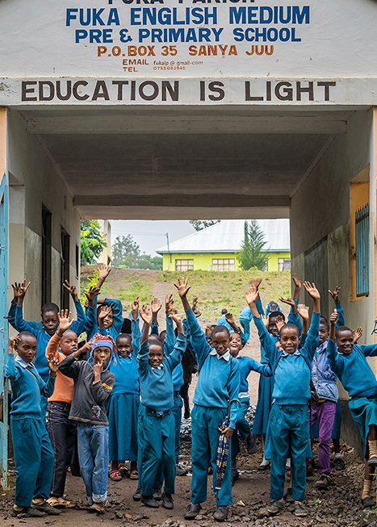

[미니버님]이 당신과 컴패션 어린이들을 초대했습니다.
어린이들

저희에요
1
미니버님
내 어린 시절이야
우린 참 많이 닮은 것 같아
1
어린이들
네?
1
미니버님
^^
1
우리는 꿈 많은 어린 시절이 닮았어
나는 선생님이 꿈이었는데 너희는?
1
어린이들
...
1
가난이 채팅에 참여했습니다.
가난
아니 둘은 달라
1
미니버는 자유롭게
꿈꾸는 행복을 누렸지만,
너희들는
나로 인해 계속
꿈을 꿀 수 없을테니까
1
어린이들
ㅠㅠ
1
미니버님이 가난을 강퇴시켰습니다.
미니버님
가난이 오늘도 너희에게 거짓말을 하는구나!
가난해도 꿈꿀 수 있어
1
1
어린이들
정말 그럴까요? ㅠㅠ...
전 일하러 갈게요...
1
[홍길동]이 퇴장하였습니다.
미니버님
우리 둘만 남았네요…
1
당신도 어린 시절 꾸었던 꿈이 있나요?
1
그렇다면 저와 함께
어린이의 손을 잡아주세요
그리고 희망을 말해주세요.
1
“얘들아 너희는 꿈을 꿀 자격이 있어.”
1
“자, 여기 내꿈꿔.”
1
어린이들을 다시 초대하기
www.compassion.or.kr